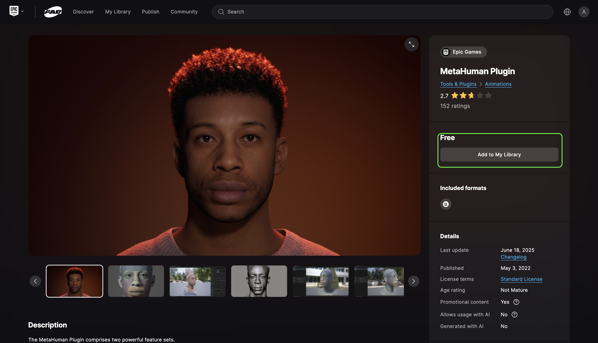
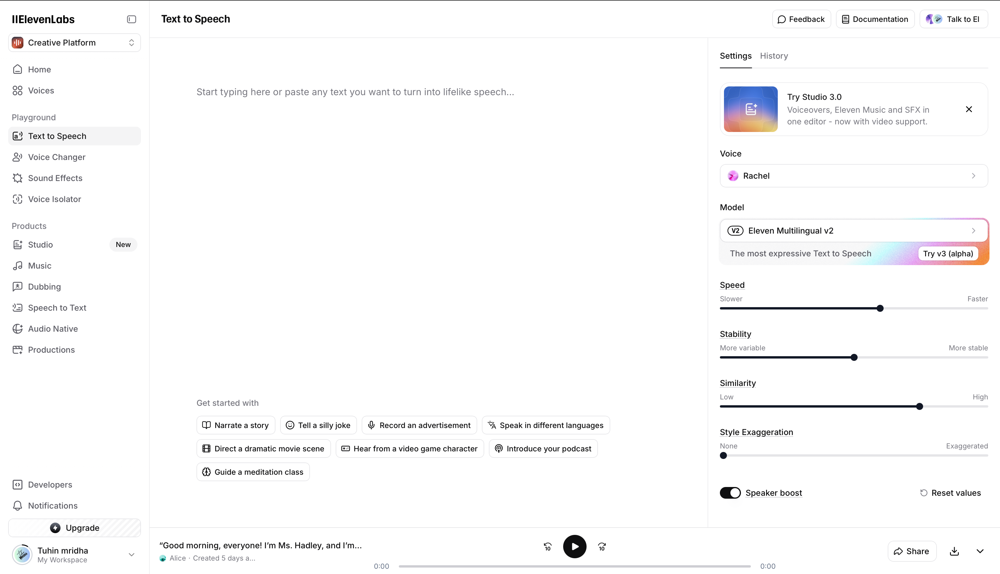

MetaHuman Installation and Audio Facial Animation in Unreal Engine 5.5 – Step-by-Step Guide
This tutorial will guide you step-by-step through the process of installing and using MetaHuman in Unreal Engine 5.5, including the new Audio-to-Facial Animation feature. Whether you’re just starting with Unreal or exploring digital humans for the first time, this guide breaks everything down into clear, easy-to-follow steps. You’ll learn how to install and enable the required plugins like Fab, MetaHuman, and MetaHuman Animator, how to bring a MetaHuman character into your project, and finally how to generate lifelike facial animations directly from recorded audio. By the end, you’ll have a working MetaHuman character in your Unreal Engine scene that can talk and face animates according to the voice
Engine Required
Unreal Engine: Version 5.5 or later
Plugins Required
1. Quixel Bridge 2. FAB 3. MetaHuman
Part A: Install / Bring a MetaHuman into UE 5.5
Install UE & open a clean project
- Install Unreal Engine 5.5 from Epic Games Launcher → Launch. YouTube URL: Click Here For Video Tutorial
- Install Quixel Bridge if not installed automatically YouTube URL: Click Here For Video Tutorial
- Create a Blank project 1. Blueprint 2. configured for Desktop/Console 3. Maximum Quality 4. Starter Content ON.
Enable required plugins
- Go To MetaHuman Plugin in Fab Store. Click on Add To My Library [ Click Image To Zoom ] 
- Come back to Epic Games Library Section and Install MetaHuman
- Open Unreal Engine 5.5 and then Navigate to Edit → Plugins.
- Search & enable the following plugins:
- MetaHuman
- MetaHuman SDK
- Fab (should be enabled by default)
- Bridge (should be enabled by default)
- Restart the editor when prompted.
Get a MetaHuman into your project
- Go to Window → Quixel Bridge
- Click on MetaHuman Tab. Select a Character. It On The left bottom corner you will see button for login
- Sign in → Select a Character → Download
- The MetaHuman folder appears in Content Browser, drag the BP_ character into your level.
Part B: Generate Audio from Text using ElevenLabs
Generate Audio / Use Any Existing Audio
- Go to https://elevenlabs.io
- Log in or create a free account.
- Open Text to Speech from the menu.
- Paste your desired text (I have added a reference below).
- Choose a voice you like.
- Click Generate to create the audio.
- Click Download and save the file as WAV or MP3. 
“Good morning, everyone! I’m Ms. Hadley, and I’m so excited to welcome you to your very first Chemistry Lab!
Here, we’ll explore bubbling reactions, colorful mixtures, and the amazing world of matter.
Chemistry isn’t just formulas—it’s curiosity, discovery, and a bit of science magic!
Remember, it’s okay to make mistakes and ask questions. Today, you’re not just
students—you’re young scientists. So, goggles on and let’s get experimenting!”
Import Audio In Unreal Engine
- In Unreal Engine, open Content Browser → Import, and select your audio file.
- The audio appears as a SoundWave asset — now ready for MetaHuman Animator.
Part C: Using MetaHuman Animator to Generate Facial Animation from Audio
Optionally [YouTube URL]: Click Here For Video TutorialCreate MetaHuman Animator Performance
- Right Click On Content Browser
- Select MetaHuman Animator → MetaHuman Performance
- Double click to open the performance panel
Generate Facial Animation from Audio
- In Input Type. Select Audio
- In the Audio field. Select imported audio file from the dropdown menu.
- In Control Rig field. Select Face_ControlBoard_CtrlRig from the dropdown menu.
- In Visualization Mesh field. Select MetaHuman Character FaceMesh from the dropdown menu.
- Click Process from Top left bar of the window. The system will process the audio and create facial animation data.
- Once processing is complete, click Export Animation to transfer the facial animation to your MetaHuman character in the level.